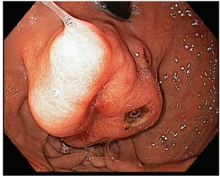
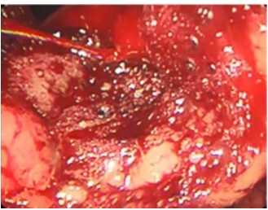

Questão 1 · Endoscopia Digestiva Alta EDA · Abordagem Inicial · Terapia Farmacológica · 4000186072Paciente de 54 anos, sem comorbidades prévias, é admitido em serviço de emergência com histórico de 2 episódios hematêmese franca há 3 horas. No momento encontra-se estável hemodinamicamente, com Frequência Cardíaca de 82bpm e Pressão Arterial de 110x72 mmHg. Sobre o manejo desse paciente, assinale a alternativa CORRETA.
A O uso de inibidores de bomba de prótons é recomendado, sendo que a infusão por meio de bomba infusora é superior ao uso intermitente.
B A infusão de eritromicina 20 a 90 minutos antes da realização da endoscopia é recomendada, uma vez que facilita a visualização da mucosa gástrica durante o procedimento.
C A endoscopia deve ser realizada em até 6 horas, uma vez que sua realização precoce esteve associada à menor mortalidade.
D Nos casos em que não está disponível a endoscopia, deve-se realizar um estudo contrastado com Bário para afastar a possibilidade de tumores gástricos.
E O uso de ácido tranexamico está indicado, uma vez que reduz a incidência de ressangramento e de necessidade de transfusão, sem aumentar o risco de fenômenos trombóticos.
Questão 2 · Def inição e Etiologias · Condução Clínica · Condução Clínica · 4000185576Paciente com história conhecida de hipertensão portal esquistossomótica e varizes de esôfago de grande calibre, apresenta-se com novo episódio de hemorragia digestiva alta (HDA) e repercussão hemodinâmica grave, mas com estabilização clínica rápida e adequada. Em relação às principais causas de hemorragias digestivas altas, assinale a alternativa CORRETA.
A Nos pacientes com cirrose hepática e varizes por hipertensão portal deve-se manter a hemoglobina acima de 12 g/dL.
B A endoscopia digestiva alta terapêutica deve ser feita imediatamente, pois evita o ressangramento nas primeiras 24h.
C Cerca de 80% das HDA de origem não varicosas cessam espontaneamente o sangramento a despeito do início do tratamento.
D A HDA de origem não varicosa é causada principalmente por lesão aguda de mucosa gastroduodenal e tumores gástricos.
Questão 3 · Classif icação de Forrest · 4000185280Com relação à classificação de Forrest para úlceras pépticas com sangramento, assinale a alternativa correta.
A Forrest 2A diz respeito a úlceras com coágulo aderido.
B Forrest 1B diz respeito a úlceras com coto vascular visível.
C Forrest 3 diz respeito a úlceras com pontos de hematina.
D Forrest 2B diz respeito a úlceras com sangramento em babação ou porejamento.
E Forrest 1 A diz respeito a úlceras com sangramento em jato.
Questão 4 · Def inição e Etiologias · Def inição e Etiologias · 4000185279Quanto às hemorragias digestivas, assinale a alternativa
A Melena significa sangue digerido nas fezes.
B Enterorragia ou hematoquezia significa presença de sangue vivo nas fezes.
C Hematêmese significa vômitos com sangue.
D Pacientes que apresentam hematêmese certamente apresentam hemorragia digestiva alta.
E Pacientes que apresentam melena certamente não apresentam hemorragia digestiva baixa.
Questão 5 · Diagnóstico e Tratamento · Condução Clínica · Abordagem Inicial · 4000184698Mulher de 65 anos, é encaminhada para a emergência do hospital com quadro de hemorragia digestiva. Ela não apresenta comorbidades. Após ressuscitação hídrica e monitorização hemodinâmica, a paciente se mantém estável e a dosagem de hemoglobina sérica da paciente é de 10,5 mg/dl. Em seguida é realizada uma endoscopia digestiva alta que mostra uma úlcera duodenal de 0,8 cm com sangramento ativo. O endoscopista realiza hemostasia com uso de hemoclipes e adrenalina e relata que obteve sucesso com a hemostasia. Assinale a alternativa correta sobre a conduta a seguir para a paciente:
A Alta com omeprazol 40 mg via oral de 12/12 horas por quatro semanas
B Observação em UTI com dosagem seriada da hemoglobina e IBP endovenoso
C Arteriografia e embolização da artéria gastroduodenal e observação em UTI
D Cirurgia com realização de vagotomia e piloroplastia e pós-operatório em enfermaria.
Questão 6 · Def inição e Etiologias · 4000184664Assinale a alternativa que apresenta CORRETAMENTE três causas de hemorragia digestiva alta.
A Angiodisplasia, neoplasia de estômago e divertículo de meckel.
B Angiodisplasia, úlcera péptica gastroduodenal e divertículo de Meckel.
C Angiodisplasia, úlcera péptica gastroduodenal e neoplasia de estômago.
D Úlcera péptica gastroduodenal, neoplasia de estômago e diverticulo de Meckel.
Questão 7 · Tumor Estromal Gastrointestinal GIST · Sangramento por Lesão Neoplásica · 4000184154Hemorragia Digestiva Alta Não Varicosa HDA Nâo Varicosa Mulher, 59 anos de idade, foi admitida no Serviço de Emergência devido à melena há 6 dias. Nega alteração do hábito intestinal. Sem comorbidades. Relata ingestão de bebida alcóolica nos nais de semana (1 lata de cerveja). Fez uso de anti- inflamatório há 1 mês. Ao exame clínico, encontra-se em bom estado geral; descorada; abdome ácido; sem massas palpáveis; e ausência de ascite. Exames laboratoriais: Hb 8,7 g/dL; Ht 26%; Plaquetas 231 mil/mm³; INR 1,1. Foi realizada a endoscopia digestiva alta que mostrou a seguinte lesão no corpo gástrico: Considerando o quadro clínico e o achado endoscópico, qual é o diagnóstico mais provável?

A Tumor estromal gastrointestinal (GIST).
B Adenocarcinoma gástrico.
C Varizes gástricas.
D Úlcera gástrica Forrest III.
Questão 8 · Classif icação de Forrest · 4000183699Assinale a alternativa correspondente à classificação III de Forrest para sangramento de úlcera gástrica.
A Sangramento volumoso em jato
B Sem sinais de sangramento
C Sangramento recente com fundo hemorrágico
D Sangramento ativo de pequeno volume
E Sangramento recente com coágulo visível
Questão 9 · Técnicas de Hemostasia Endoscópica · Endoscopia Digestiva Alta EDA · Classif icação de Forrest · 4000182595Homem, 45 anos, hipertenso e diabético insulinodependente, dá entrada na unidade de emergência devido à queixa de hematêmese franca associada à lipotimia. Após período de estabilização é submetido à endoscopia digestiva alta (EDA) que revela úlcera duodenal ativa Forrest IIa. Assinale a alternativa que correlaciona a sua descrição endoscópica, a conduta mais adequada e o seu grau de risco para ressangramento.
A Sangramento ativo não pulsátil – clipe hemostático – alto risco.
B Vaso visível não sangrante – eletrocoagulação bipolar – alto risco.
C Vaso visível não sangrante – adrenalina – baixo risco.
D Úlcera com coágulo aderente – clipe hemostático – baixo risco.
E Úlcera de fundo hematínico – eletrocoagulação monopolar – alto risco.
Questão 10 · Os Escores de Estratif icação de Risco · 4000182594Assinale a alternativa que apresenta fatores de risco para morbidade e mortalidade na hemorragia gastrointestinal aguda.
A Insuficiência renal, necessidade de hemotransfusão e hematêmese durante a internação.
B Idade > 50 anos, hematoquezia e perda ponderal.
C Cirrose, anemia ferropriva e necessidade de endoscopia.
D Uso de anticoagulantes orais, idade > 60 anos e doença cardíaca.
E Necessidade de cirurgia, vômitos em borra de café e DPOC.
Questão 11 · Técnicas de Hemostasia Endoscópica · Classif icação de Forrest · 4000182360Homem de 35 anos de idade procura a unidade de emergência após apresentar episódio de hematêmese há 1 hora. Refere ser etilista e fazer uso de cocaína há 5 anos. Nega quadros similares no passado. Ao exame físico, está descorado (+/4+), desidratado, com frequência cardíaca de 105bpm, pressão arterial de 100x70mmHg e escala de coma de Glasgow de 15. Seu abdome está plano, flácido e indolor. Os exames laboratoriais evidenciaram: Hb: 9,8g/dL (VR: 13 - 18g/dL); leucócitos: 3.800/mm3 (VR: 4000 - 11000/mm³); plaquetas: 290.000/mm3 (VR: 140.000 - 450.000/mm³); creatinina: 0,8mg/dL (VR: 0,7 - 1,2mg/dL); ureia: 50mg/dL (VR: 10 - 50mg/dL); bilirrubina total: 0,9mg/dL (VR: 0,2 a 1,1mg/dL); INR: 1,0 (VR: 0,9 - 1,1) e lactato arterial: 3mmol/L (VR: 0,5 a 1,6mmol/L). Foi realizada endoscopia digestiva alta, que apresentou a alteração visível na imagem a seguir, na incisura angular do estômago: Considerando o caso clínico apresentado, assinale a alternativa correta:

A No momento da alta hospitalar, deve-se prescrever betabloqueador não-seletivo para reduzir o risco de ressangramento.
B Deve-se administrar terlipressina endovenosa para reduzir o risco de ressangramento.
C Há indicação de administrar ácido tranexâmico e iniciar antibiótico profilático para peritonite bacteriana espontânea.
D O tratamento endoscópico deve ser feito com uso de terapia combinada de hemoclip e injeção de adrenalina.
E Caso o paciente apresente instabilidade hemodinâmica, deve ser feita uma gastrectomia total com reconstrução em Y de Roux.
Questão 12 · Classif icação de Forrest · 4000181868Um paciente de 60 anos, portador de artrite gotosa crônica, foi encontrado pelos familiares sentado no vaso sanitário de casa, letárgico, com grande quantidade de sangue vivo em orofaringe e no chão em torno do vaso. Admitido no PS, foi realizada endoscopia digestiva alta após expansão volêmica e estabilização hemodinâmica. Foi visto na endoscopia úlcera em corpo gástrico com sangramento em porejamento. O laudo endoscópico, segundo a classificação de Forrest, deverá ser:
A IA.
B IB.
C IIA.
D IIC.
E III.
Questão 13 · Tratamento Cirúrgico Da HDA · 4000181759Qual é a indicação de cirurgia na hemorragia gastrointestinal alta não varicosa?
A Instabilidade hemodinâmica a despeito da reanimação vigorosa.
B Falha da primeira técnica endoscópica com associação de dois métodos para controlar a hemorragia.
C Sangramento lento, porém, contínuo, com necessidade de transfusão maior que 1U a cada 3 dias.
D Presença úlceras maiores que 2 cm.
Questão 14 · Lesão de Dieulaf oy · 4000170588Um homem de trinta anos de idade, sem antecedentes mórbidos, é admitido em um pronto-socorro após episódio copioso de hematêmese. É feito o atendimento inicial e, após estabilização, é solicitada uma endoscopia. O exame encontra grande quantidade de sangue na câmara gástrica, que, após aspirada, revela mucosa gástrica sem alterações, exceto por um grande coágulo aderido no fundo gástrico (o médico examinador optou por não retirá-lo). Não havia varizes de esôfago e a mucosa duodenal era normal. Com base nesse caso hipotético, assinale a alternativa que apresenta a melhor conjectura etiológica para o sangramento do paciente.
A adenocarcinoma gástrico
B úlcera péptica
C malformação vascular da submucosa gástrica
D hipertensão portal segmentar
E corpo estranho
Questão 15 · Classif icação de Forrest · 4000170510L.P.A, 38 anos, sem comorbidades prévias, foi trazida ao hospital após ter apresentado episódio de hematêmese em domicílio. Nega alergias. Relata estar em uso de ibuprofeno por conta de lombalgia após esforço físico há 15 dias. Foi submetida a endoscopia digestiva alta que demonstrou úlcera gástrica com sangramento ativo difuso. Com relação ao quadro apresentado, quais são a classificação de Forrest da úlcera apresentada pela paciente e o risco de ressangramento respectivo?
A Forrest IA – Alto risco de ressangramento
B Forrest IB – Alto risco de ressangramento
C Forrest IB – Baixo risco de ressangramento
D Forrest IA – Baixo risco de ressangramento
Questão 16 · Síndrome de MalloryWeiss · Cirurgia · 4000169328Paciente do sexo masculino, 30 anos, etilista e tabagista, dá entrada no pronto-atendimento devido a dor abdominal epigástrica e vômitos com raias de sangue que se iniciaram após uma festa. Durante a investigação diagnóstica, realizou endoscopia digestiva alta, com diagnóstico de síndrome de Mallory Weiss. Considerando o diagnóstico em questão, qual é a região acometida?
A Esôfago médio.
B Pequena curvatura gástrica.
C Junção esofago-gástrica;
D Junção gastroduodenal.
Questão 17 · Escore de GlasgowBlatchf ord · Diagnóstico e Tratamento · Abordagem Inicial · 4000168120Um paciente de 45 anos é admitido no serviço de Pronto Socorro do Hospital Universitário Cajuru com queixa de hematêmese. Ele refere que apresentou 2 episódios de vômitos com sangue vivo, nega melena, síncope ou outros sintomas. Nega comorbidades prévias e estava em uso de Diclofenaco de Sódio para tratamento de uma dor no joelho esquerdo. Sua pressão arterial é de 126x78 mmHg, sua frequência cardíaca, de 88bpm. Seus exames laboratoriais revelam uma hemoglobina de 12,5mg/dL e uma Ureia de 18mg/dL. Sobre esse quadro clínico, assinale a alternativa CORRETA.
A As recomendações mais atuais indicam reposição de ferro parenteral para esse paciente, mesmo com a hemoglobina normal no momento.
B A endoscopia deve ser realizada imediatamente, uma vez que demonstrou ser superior a realização em até 24 horas.
C O uso de Inibidores de Bomba de Protons devem ser iniciados imediatamente, sendo recomendado sua infusão contínua por meio de bomba infusora, uma vez que os trabalhos mais recentes demonstram superioridade em relação ao esquema em doses intermitentes.
D Esse paciente pode ser classificado como de muito baixo risco pelo escore de Glasgow-Blatchford e pode receber alta com seguimento ambulatorial.
E Deve-se evitar uso de procinéticos antes da realização da endoscopia pelo aumento no risco de ressangramento.
Questão 18 · Def inição e Etiologias · 4000167959Sobre
A Também conhecido como pseudo-hematobilia
B É causada por erosão de um pseudocisto pancreático na artéria mesentérica
C A angiografia é diagnóstico, porém não permite a embolização
D Manifesta-se geralmente por dor abdominal, febre, astenia, fadiga e icterícia
E Pancreatectomia distal não é indicado para cura
Questão 19 · Hemorragia por Úlcera Péptica HDA por DUP · Gastroenterologia · 4000166136Acerca da hemorragia digestiva alta por úlcera péptica, assinale a alternativa correta.
A A maior parte das úlceras gástricas situa-se junto ao fundo gástrico.
B A endoscopia digestiva alta não permite a identificação do local de sangramento, principalmente quando há múltiplas úlceras.
C A presença de sangramento em jato sugere maior probabilidade de ressangramento, mesmo que a terapêutica inicial tenha sido efetiva.
D A presença de vaso visível está associada a um índice de ressangramento de 80%.
E A terapêutica endoscópica combinada com o uso de inibidores de bomba de prótons, associado à segunda endoscopia, não diminui as taxas de ressangramento.
Questão 20 · Def inição e Etiologias · Hemorragia por Úlcera Péptica HDA por DUP · 4000165367Hemorragia Digestiva Alta Não Varicosa HDA Nâo Varicosa A principal causa de hemorragia digestiva alta são:
A varizes gástricas
B varizes esofágicas
C lacerações de Mallory-Weiss
D úlceras gástricas e duodenais
Questão 21 · Def inição e Etiologias · Indicação de Hemotransf usão · Abordagem Inicial · 4000163536Em relação à hemorragia digestiva alta, é correto afirmar:
A O hematócrito é um excelente indicador precoce da magnitude da perda sanguínea.
B A melena se desenvolve após a perda de 10-30 mL de sangue no trato gastrointestinal superior, enquanto hematoquezia requer uma perda de pelo menos 100 ml.
C Em ordem decrescente de importância, as principais causas de hemorragia digestiva alta são Síndrome de Mallory Weiss, Anormalidades Vasculares, Hipertensão Portal, Doença Ulcerosa Hepática e Gastrite Erosiva.
D A etapa inicial de abordagem é a avaliação do estado hemodinâmico. Uma pressão arterial sistólica inferior a 100 mmHg identifica um paciente de alto risco com sangramento agudo grave. Uma frequência cardíaca de mais de 100 batimentos / min com pressão arterial sistólica acima 100 mmHg significa perda de sangue aguda e moderada.
E Concentrado de hemácias deve ser administrado para manter a hemoglobina em 10g/dl, com base na hemodinâmica do paciente, status, comorbidades (especialmente doenças cardiovasculares) e presença de sangramento contínuo.
Questão 22 · Def inição e Etiologias · 4000163435Na hemorragia digestiva, melena é definida por fezes pastosas, de coloração preta e odor fétido. Essas características se devem à oxidação do heme por bactérias intestinais, indicando que a fonte do sangramento se encontra provavelmente:
A acima do piloro.
B acima do ângulo de Treitz.
C nas alças do jejuno proximal.
D acima da válvula ileocecal.
E no ceco e início do cólon direito.
Questão 23 · Hemorragia Digestiva Baixa HDB · Hemorragia Digestiva Alta Varicosa HDA Varicosa · 4000163434Hemorragia Digestiva Alta Não Varicosa HDA Nâo Varicosa Sobre hemorragia digestiva, considere as seguintes afirmativas: 1. Ângulo de Treitz é o reparo anatômico que define o limite entre hemorragia digestiva alta e baixa. 2. Varizes de esôfago, úlcera péptica, diverticulose colônica e angiodisplasia perfazem 85% das hemorragias agudas. 3. Cerca de 85% dos casos de hemorragia digestiva aguda decorrem de sangramentos acima do Ângulo de Treitz. 4. O intestino delgado é o responsável por 5 a 8% das hemorragias agudas. Assinale a alternativa correta.
A Somente a afirmativa 4 é verdadeira.
B Somente as afirmativas 1 e 4 são verdadeiras.
C Somente as afirmativas 2 e 3 são verdadeiras.
D Somente as afirmativas 1, 2 e 3 são verdadeiras.
E As afirmativas 1, 2, 3 e 4 são verdadeiras.
Questão 24 · Hemorragia por Úlcera Péptica HDA por DUP · Abordagem Inicial · 4000151611Homem de 63 anos procura a emergência referindo que nas últimas 24 horas teve várias evacuações de fezes enegrecidas e nas últimas 12 horas tem sentido muita tontura. Refere ser hipertenso e nega cirurgias prévias. O paciente reclama de cefaleias frequentes devido a tensão no trabalho, para a qual vem se automedicando com quatro a seis comprimidos de ibuprofeno por dia nas últimas duas semanas. Ele nega uso de bebida alcoólica, tabaco ou drogas ilícitas. Ao exame físico apresenta temperatura de 36°C, pulso de 105/min, pressão arterial de 104/80 mmHg e frequência respiratória de 22/min. Ele está acordado, mas apresentando letargia e palidez. O exame cardiopulmonar não tem alteração. Seu abdome está ligeiramente distendido e ligeiramente sensível no epigástrio. O exame retal revela fezes melanóticas, mas sem massas na ampola retal. Escolha a alternativa abaixo que apresenta a hipótese diagnóstica e o manejo correto para este caso.
A Hemorragia por varizes esofágicas e o manejo inicial requer a passagem do balão esofágico e drogas vasoativas.
B Hemorragia por doença diverticular do colo e o manejo inicial requer ressuscitação volêmica e colonoscopia.
C Isquemia mesentérica e o tratamento inicial requer uma arteriografia e anticoagulação com heparina.
D Hemorragia digestiva por úlcera péptica e o manejo inicial requer ressuscitação volêmica e endoscopia digestiva alta.
Questão 25 · Tratamento Cirúrgico Da HDA · Hemorragia por Úlcera Péptica HDA por DUP · Terapia Farmacológica · 4000146994Sobre a hemorragia digestiva alta causada por úlcera péptica, suas características e abordagem, assinale a alternativa correta.
A A úlcera péptica representa a 4ª maior causa de hemorragia digestiva alta.
B Deve-se aguardar 72h após o quadro inicial da hemorragia para ser realizada endoscopia digestiva alta.
C A maioria dos casos de hemorragia por úlcera necessita de abordagem cirúrgica.
D Hemorragia mais intensa geralmente ocorre quando a úlcera duodenal penetra ramos da artéria gastroepiploica esquerda.
E Na suspeita ou diagnóstico de úlcera péptica, deve ser iniciada terapia com inibidor de bomba de prótons.
Questão 26 · Classif icação de Forrest · 4000146255Paciente feminina, 27 anos, portadora de artrite reumatoide em uso diário de antiin amatórios não esteroidais há 12 anos, chega no pronto-socorro com história de grande sangramento nas fezes há 1 dia associado a desmaio. Relata que acordou 3 vezes na madrugada com eliminação de fezes com conteúdo sanguinolento vermelho vivo em grande quantidade. Ao levantar-se pela manhã apresentou síncope. Relata que as fezes estavam mais escurecidas há 7 dias. Nega hematêmese. Ao exame físico: regular estado geral, sudoreica, taquicárdica, pálida, descorada 3+/4. Bulhas rítmicas, sem sopros. Abdome com ruídos aumentados, ácido, indolor, sem sinais de peritonite. Inspeção perineal: ausência hemorroidas, plicomas ou ssuras. Toque retal: presença de melena em dedo de luva. Pressão arterial: 90x40 mmHg, frequência cardíaca: 122 bpm, frequência respiratória: 33 ipm. Após estabilização clínica, foi submetida a endoscopia digestiva alta que evidenciou lesão ulcerada em antro gástrico, de aproximadamente 2 cm, com coágulo aderido, impossibilitando visualização dos vasos submucosos. Trata-se de uma úlcera classificada por Forrest em:
A I
B II A
C II B
D III
Questão 27 · Abordagem Inicial · 4000146254Paciente feminina, 27 anos, portadora de artrite reumatoide em uso diário de antiin amatórios não esteroidais há 12 anos, chega no pronto-socorro com história de grande sangramento nas fezes há 1 dia associado a desmaio. Relata que acordou 3 vezes na madrugada com eliminação de fezes com conteúdo sanguinolento vermelho vivo em grande quantidade. Ao levantar-se pela manhã apresentou síncope. Relata que as fezes estavam mais escurecidas há 7 dias. Nega hematêmese. Ao exame físico: regular estado geral, sudoreica, taquicárdica, pálida, descorada 3+/4. Bulhas rítmicas, sem sopros. Abdome com ruídos aumentados, ácido, indolor, sem sinais de peritonite. Inspeção perineal: ausência hemorroidas, plicomas ou ssuras. Toque retal: presença de melena em dedo de luva. Pressão arterial: 90x40 mmHg, frequência cardíaca: 122 bpm, frequência respiratória: 33 ipm. De acordo com a classificação de choque hemorrágico, a paciente apresenta:
A Choque classe I
B Choque classe II
C Choque classe III
D Choque classe IV
Questão 28 · Condução Clínica · 4000146183Homem de 46 anos faz uso de anti-inflamatório não esteroide há seis meses, devido à lesão no menisco medial do joelho direito. Há um mês começou a apresentar dor epigástrica tipo fome nos intervalos das refeições que melhorava com uso de pastilhas antiácidas. Por várias vezes acordou com a dor e ingeria leite para alívio. Há três horas apresentou episódio de melena e tontura. Qual das afirmações abaixo NÃO é verdadeira quanto ao caso?
A Há indicação para uma endoscopia digestiva alta.
B O uso prévio de misoprostol poderia ter evitado esta evolução desfavorável.
C O diagnóstico mais provável é de úlcera duodenal.
D Antibióticos para Helicobacter pylori devem ser prontamente instituídos.
Questão 29 · Síndrome de MalloryWeiss · 4000142756Paciente com história de vômitos, seguidos de hematêmese. Realizada endoscopia digestiva alta, que mostrou lacerações na mucosa e submucosa próximas à junção esofagogástrica. Essas lesões são conhecidas como lacerações de?
A Mannkopf.
B Cullen.
C Carnett.
D Cruveilhier.
E Mallory-Weiss.
Questão 30 · Escore de Rockall · Tratamento Cirúrgico Da HDA · Diagnóstico e Tratamento · 4000142473Considere as afirmativas e assinale a opção correta. 1 . O uso da sonda nasogástrica para confirmação de HDA pode ser usada em pacientes selecionados e na impossibilidade de realização de EDA. 2. Em 1996, Rockall e cols. elaboraram, com base em um estudo envolvendo 5.810 pacientes, um escore padronizado para a avaliação dos fatores que prediziam a mortalidade e o risco de ressangramento em pacientes com HDA. Esse é o Escore de Rockall para HDA. 3 . Alguns pacientes com HDA não varicosa necessitam de tratamento cirúrgico. Dentre algumas indicações, podemos citar: “Persistência da hemorragia com di culdade de manutenção da estabilidade hemodinâmica e falha de retratamento endoscópico”.
A Somente 1 e 2 estão corretas.
B Somente 1 está correta.
C Somente 3 está correta.
D Somente 2 e 3 estão corretas.
E Somente 2 está correta.
Questão 31 · Def inição e Etiologias · Condução Clínica · 4000141988Paciente do sexo masculino, industriário, 54 anos, é conduzido por familiares ao pronto atendimento devido a “desmaio no banheiro” pela manhã. É admitido algo sonolento, anictérico, hipocorado +++/4, taquicárdico, discretamente dispneico e hipotenso. Seu exame cardiopulmonar não tem alterações e seu abdome é atípico, sem circulação colateral, plano, ácido, indolor, sem massas palpáveis. Realizou um hemograma de urgência que evidenciou 7.500 leucócitos, hemoglobina 6,3 g/dl, hematócrito 18,7% e plaquetas 350.000. Após ressuscitação volêmica com ringer lactato, seu status hemodinâmico e o nível de consciência normalizaram. Então o paciente referiu que vinha apresentando abundantes fezes escuras “como açaí” há 1 semana. Nega vômitos, disfagia, perda de peso e demais sintomas. Refere epigastralgia crônica, tratando-a por conta própria com antiácidos. Assinale a alternativa
A Caso a endoscopia digestiva alta evidencie lesão gástrica ulcerosa classe IIC de Forrest, o próximo passo é laparotomia urgente para controle do foco de sangramento.
B A evolução sub-aguda do caso associada a suspeita de hemorragia digestiva alta sugere provável Síndrome de Mallory-Weiss.
C O tratamento deste paciente provavelmente envolverá inibidores de bomba de prótons.
D O uso do balão de Sangstaken-Blackmore é essencial na abordagem terapêutica inicial deste paciente.
Questão 32 · Hemorragia Digestiva HD · Def inição e Etiologias · Diagnóstico e Tratamento · 4000141520Paciente de 65 anos, sexo feminino, é admitida na emergência de um hospital geral com quadro de hematêmese volumosa, sangramento originado de alguma patologia (doença) gástrica ou devido a rompimento de varizes esofagogástricas. O caso apresentado tem relação com hemorragia digestiva alta. Sobre essa doença, assinale a alternativa correta.
A Considera-se hemorragia digestiva alta, quando o sangramento tem origem distal ao ligamento de Treitz.
B A principal causa de hemorragia digestiva alta é neoplasia do trato digestivo superior.
C No manejo inicial de um paciente com hemorragia digestiva alta, jejum, monitorização hemodinâmica e reposição volêmica criteriosa são fundamentais, independentemente da etiologia do sangramento.
D No caso descrito, a paciente deve ser imediatamente transferida para o setor de endoscopia digestiva, visando à realização de uma endoscopia digestiva alta na primeira hora.
E Na suspeita de hemorragia digestiva alta de origem varicosa, a transfusão de concentrado de hemácias deve ser realizada se os níveis de hemoglobina estiverem abaixo de 10 g/dl, devido ao maior risco de instabilidade hemodinâmica nos cirróticos.
Questão 33 · Urgências Abdominais · Hemorragia Digestiva Alta Não Varicosa HDA Nâo Varicosa · 4000140476Paciente do sexo masculino, 9 anos de idade, foi levado pelo seu pai ao pronto-socorro com história de dor abdominal em região epigástrica de forte intensidade, náuseas e palidez, iniciadas algumas horas antes. Negava vômito, febre, parada da eliminação de gases e fezes e alteração urinária ou intestinal. Negava também o uso recente de medicamentos ou episódios anteriores semelhantes. Durante o período de observação no pronto-socorro, o paciente apresentou fezes escurecidas e fétidas. Ao exame físico apresentava-se descorado, abdome plano, ácido, levemente doloroso à palpação, ruídos hidroaéreos presentes, descompressão brusca negativa, sem visceromegalias, extremidades frias. Solicitados exames com os seguintes resultados: Hb: 7,5 g/dL, Ht: 22%, VCM: 78,4fL, leucócitos 10.700/mm³, plaquetas de 337.000/mm³, coagulograma e urina 1 normais. A hipótese diagnóstica mais provável para esse paciente, dentre as abaixo, é
A úlcera duodenal.
B hérnia encarcerada.
C apendicite aguda.
D invaginação intestinal.
E pancreatite aguda.
Questão 34 · Angiotomograf ia Computadorizada · Diagnóstico e Tratamento · 4000138637Assinale a alternativa que apresenta a situação em que a indicação de angiotomografia é inapropriada.
A suspeita de fístula aortoduodenal
B sangramento digestivo alto após a endoscopia normal
C sangramento digestivo baixo contínuo de pequena quantidade antes da colonoscopia
D sangramento digestivo (com sinais de sangramento ativo) e hipotensão controlada com cristaloide antes da colonoscopia
E sangramento de origem indeterminada
Questão 35 · Hemorragia Digestiva HD · Abordagem Inicial · 4000138242Na hemorragia digestiva (HD), separada em HDA (alta) e HDB (baixa), podemos afirmar que:
A A endoscopia digestiva alta deve ser realizada de imediato após o diagnóstico de HDA.
B Na admissão do paciente a graduação do choque hipovolêmico e a preocupação com a via aérea e a hemodinâmica do paciente são as prioridades.
C Após a estabilização hemodinâmica com transfusão sanguínea de imediato, deve ser a conduta inicial a ser adotada.
D Após a estabilização hemodinâmica com infusão de solução salina por 2 acessos venosos, a endoscopia digestiva deve ser realizada com o paciente sedado sem intubação orotraqueal.
E Se a endoscopia digestiva alta não localizar o sangramento, uma angiografia deve ser realizada se houver um sangramento de 0,1 ml/minuto.
Questão 36 · Hemorragia por Úlcera Péptica HDA por DUP · 4000130983Grande parte das hemorragias digestivas altas ocorrem por ulceração duodenal posterior com erosão da artéria:
A Mesentérica superior
B Gastroduodenal
C Gástrica direita
D Esplênica
Questão 37 · Indicações de Pesquisa e Tratamento · Classif icação de Forrest · Indicações Absolutas Obrigatórias · 4000129911Paciente feminina, 45 anos, dá entrada no pronto socorro com quadro de melena e hematêmese com 12 horas de evolução. Encontra-se estável hemodinamicamente. Relata uso de anti-inflamatório para dor lombar nos últimos 10 dias. Realiza endoscopia digestiva alta que mostra uma lesão ulcerada bulbar classificada como Sakita A1 e Forrest IIa com teste de urease positivo. Em relação a este caso clínico, analise as assertivas abaixo: I) Esta lesão deve ser tratada endoscopicamente devido ao alto risco de ressangramento. II) O achado endoscópico, demonstrado pela classificação Forrest IIa, indica para uma lesão ulcerada com sangramento ativo. III) Esta paciente pode ser tratada clinicamente com a realização de um inibidor da bomba de prótons associado com um bloqueador de H2. IV) Devido a localização bulbar da lesão ulcerada, a erradicação do H. pylori não esta indicada como parte do tratamento clínico. Estão corretas as assertivas
A I apenas.
B I e II apenas.
C III e IV apenas.
D II, III e IV apenas.
E Todas assertivas estão corretas.
Questão 38 · Hemorragia Digestiva Alta Varicosa HDA Varicosa · 4000124264Hemorragia Digestiva Alta Não Varicosa HDA Nâo Varicosa Hemorragia digestiva alta-HDA é uma das principais causas de atendimento em serviços de urgência e emergência. Assinale a alternativa CORRETA em relação a esta entidade.
A A principal causa é a rotura de varizes de esôfago.
B O exame inicial a ser solicitado na admissão de pacientes com HDA é a endoscopia digestiva alta.
C Úlceras gástricas e duodenais são a principal causa de HDA.
D Terlipressina e Octreotide se mostraram úteis no controle da HDA independentemente da etiologia do sangramento.
E O uso do inibidor de bomba de prótons está indicado na urgência, pois auxilia na cicatrização rápida das úlceras e na prevenção da rotura das varizes esofágicas.
Questão 39 · Abordagem Inicial · Hemorragia Digestiva Alta Não Varicosa HDA Nâo Varicosa · 4000124063Paciente de aproximadamente 50 anos é admitido na Emergência com quadro de hematêmese vultuosa. Em relação a abordagem desse paciente, a conduta inicial recomendada é:
A arteriografia.
B lavagem gástrica.
C endoscopia digestiva alta.
D estabilização cardiorrespiratória.
E início de octreotide.
Questão 40 · Hemorragia por Úlcera Péptica HDA por DUP · 4000116789Mulher, 65 anos, hipertensa e diabética, relata que vinha assintomática quando, há 3 dias, teve episódio de náusea seguido de vômito com sangue. Desde então, vem apresentando evacuações escurecidas e amolecidas, cerca de 2 vezes ao dia. Foi a um pronto-atendimento por sensação de fraqueza e lipotimia associados ao quadro. Negava dor abdominal ou perda de peso. Hemograma realizado na urgência mostrou anemia (Hemoglobina de 8g/dL), sem outras alterações. Assinale a alternativa que indica corretamente o diagnóstico mais provável.
A linfoma MALT
B úlcera duodenal
C úlcera gástrica
D varizes esofágicas
E adenocarcinoma gástrico
Questão 41 · Classif icação de Forrest · 4000115831Sobre a classificação de Forrest, na hemorragia Digestiva Alta, marque a alternativa correta:
A Lesão IIC, Coagulo branco, risco baixo de ressangramento.
B Lesão IA, sangramento ativo, com risco baixo de novo sangramento, chegando a 5%.
C Lesão IV, alto risco de novo sangramento, 90%.
D Lesão IC, baixo risco de novo sangramento, com coto vascular visível.
E Lesão IV, alto risco de novo sangramento, com 90%, com sangramento ativo.
Questão 42 · Abordagem Inicial · 4000113898Osvair, 72 anos, deu entrada na Unidade Regional de Emergência, com história de hematêmese, melena, confusão mental e desmaio. Ao chegar, a frequência cardíaca era 116 bpm, a PA= 80/58 mmHg, frequência respiratória 20 ipm, afebril. A esposa falou que não urinou nas últimas 12 horas. A mais rápida conduta que se deve tomar, neste caso, é
A realizar coleta de hematócrito e hemoglobina, para guiar transfusão de sangue.
B solicitar endoscopia digestiva alta de urgência.
C iniciar reposição volêmica com cristaloide isotônico.
D iniciar inibidor de bomba protônica injetável.
Questão 43 · Técnicas de Hemostasia Endoscópica · Classif icação de Forrest · 4000112087Para tratamento endoscópico da úlcera péptica hemorrágica Forrest IB, a melhor opção atual para tratamento hemostático é:
A heat probe.
B adrenalização.
C utilização de dois métodos.
D ligadura elástica.
E cola fibrina.
Questão 44 · Classif icação de Forrest · Diagnóstico e Tratamento · 4000111106Homem, 42 anos, em tratamento de tendinite do calcâneo foi admitido em Unidade de Pronto Atendimento com melena há dois dias, frequência cardíaca de 92 batimentos por minuto, pressão arterial de 110 x 70 mmHg, hemoglobina de 12 g%. Após as medidas iniciais foi encaminhado para hospital de média complexidade para realização de endoscopia digestiva alta que revelou úlcera péptica coberta por fibrina (vide figura). Qual é a melhor orientação?

A Hemostasia endoscópica, dieta líquida sem resíduos, tratamento com inibidor de bomba de prótons e observação em leito de enfermaria por 12 horas para monitorar ressangramento.
B Iniciar dieta, alta hospitalar e tratamento com inibidor de bomba de prótons e para Helicobacter pylori.
C Hemostasia endoscópica, jejum, inibidor de bomba de prótons e observação em leito de estabilização clínica e repetir a endoscopia em 24 horas para comprovar a hemostasia.
D Jejum, inibidor de bomba de prótons em dose dobrada, observação em leito de enfermaria até completar 72 horas sem sinais hemodinâmicos e de exteriorização de sangramento.
Questão 45 · Técnicas de Hemostasia Endoscópica · Classif icação de Forrest · 4000111005Hemorragia por Úlcera Péptica HDA por DUP Homem, de 64 anos, portador de cirrose alcoólica, vem ao Pronto-Socorro referindo vômitos com sangue em grande quantidade. Nega antecedente de hemorragia digestiva. Realizada endoscopia digestiva alta com achado de varizes em esôfago e fundo gástrico, de médio calibre e úlcera gástrica pré-pilórica Forrest 2A. Qual é a taxa aproximada de ressangramento e a conduta indicada?
A 10%, tratamento da úlcera com esclerose com argônio.
B 30%, tratamento das varizes com terlipressina.
C 45%, tratamento da úlcera com clip e esclerose.
D 50%, tratamento das varizes com esclerose.
Questão 46 · Escore de Rockall · 4000107531Você está de plantão no pronto-socorro e recebe uma paciente do sexo feminino, de 65 anos, hipertensa, e em tratamento para insu ciência cardíaca congestiva, com história de hematêmese e melena há 1 dia. No exame físico, apresenta-se descorada ++/4+, FC = 110 bpm, Pa = 110 x 70 mmHg e com melena ao toque. Após avaliação inicial, você solicita uma endoscopia digestiva alta. O endoscopista após o exame relata que encontrou uma úlcera duodenal Forrest IIa e realizou escleroterapia. Qual o risco de ressangramento dessa paciente?
A A paciente apresenta risco elevado para ressangramento, acima de 30% segundo Score de Rockall.
B A paciente apresenta risco intermediário de novo sangramento.
C A paciente apresenta baixo risco de ressangramento, abaixo de 20% segundo Score de Rockall.
D Não é possível determinar o risco de ressangramento segundo o Score de Rockall, pois faltam os dados laboratoriais para sua definição.
E A paciente tem uma úlcera do tipo Forrest IIa, por isso tem baixo risco de ressangramento.
Questão 47 · Classif icação de Forrest · 4000105617O achado de endoscopia digestiva alta com úlcera de antro com coágulo aderido, com sinais de sangramento recente é classificada em Forrest:
A I A
B I B
C II A
D II B
Questão 48 · Classif icação de Forrest · 4000105609O achado de endoscopia digestiva alta com úlcera de antro com vaso visível, com sinais de sangramento recente é classificada em Forrest:
A I A
B I B
C II A
D II B
Questão 49 · Neoplasias Benignas do Estômago · Lesão de Dieulaf oy · Linf omas Gástricos · 4000103667Homem de 49 anos, diabético e hipertenso, refere vômitos com sangue em grande quantidade há 2 horas. Nega episódios semelhantes. Exame físico: PA = 105/75 mmHg; FC = 118 bpm; perfusão > 3 segundos. Exames laboratoriais: HB = 9,3 mg/dL; HTC = 27%; plaquetas = 180000. Realizada endoscopia digestiva alta, que detectou esôfago normal e gastrite erosiva leve na parte central da pequena curvatura com grande quantidade de sangue, sem identi cação do sítio do sangramento. O paciente recebeu reposição volêmica adequada com boa resposta. A hipótese diagnóstica provável e a conduta a serem tomadas, respectivamente, são:
A leiomioma gástrico; realizar mucosectomia endoscópica.
B linfoma gástrico; proceder biópsia da lesão.
C hemangioma gástrico; realizar ligadura elástica da lesão.
D lesão de Dieulafoy; realizar aplicação de terapia térmica ou esclerosante.
Questão 50 · Classif icação de Forrest · 4000079737Um paciente com achado de lesão em endoscopia classificada em FORREST IIB deve apresentar:
A Úlcera com sangramento escoando (“em babação”).
B Úlcera em jato.
C Úlcera com coágulo aderido.
D Úlcera com vaso visível.
Questão 51 · Classif icação de Forrest · 4000076926Quando de uma endoscopia para diagnóstico da hemorragia gastrointestinal alta, constata-se que há sangramento ativo e pulsátil. Assim, usando-se a classificação de Forrest, podemos dizer que esta hemorragia é do
A grau Ia / alto risco de ressangramento.
B grau Ib / alto risco de ressangramento.
C grau IIa / risco intermediário de ressangramento.
D grau IIb / alto risco de ressangramento.
E grau IIc / baixo risco de ressangramento.
Questão 52 · Def inição e Etiologias · Hemorragia por Úlcera Péptica HDA por DUP · 4000076904Excluindo-se a hemorragia por hipertensão porta, qual das respostas abaixo é a principal causa de hemorragia gastrointestinal alta?
A Malformações arteriovenosas.
B Esofagite.
C Doença ulcerosa péptica.
D Lacerações de Mallory-Weiss.
E Gastrite ou duodenite.
Questão 53 · Def inição e Etiologias · 4000073715Atualmente, entre as opções abaixo, a causa mais comum de hemorragia digestiva alta é:
A Úlcera gástrica e duodenal.
B Gastrite ou duodenite.
C Esofagite.
D Sindrome de Mallory Weiss.
Questão 54 · Síndrome de MalloryWeiss · 4000062580Após ingestão excessiva de bebida alcoólica e vômitos repetidos, com a presença de hematêmese, o diagnóstico endoscópico de síndrome de Mallory-Weiss é confirmado ao se identificar que a fonte de sangramento digestivo se deve à:
A Laceração da mucosa e submucosa esofagiana em seu terço proximal;
B Laceração da mucosa e submucosa esofagiana em seu terço médio;
C Laceração da mucosa e submucosa esofagiana na junção esofagogástrica;
D Esofagite erosiva aguda;
E Gastrite erosiva aguda.
Questão 55 · Indicação de Hemotransf usão · Abordagem Inicial · 4000061848Sobre a abordagem inicial e a abordagem especí ca na doença ulcerosa péptica na emergência, assinale a alternativa correta.
A A reposição volêmica agressiva (> 3 litros nas primeiras 6 horas da admissão do paciente) mostrou-se benéfica e reduziu os riscos de sangramento.
B Em pacientes com baixo risco de sangramento recorrente no PS, em paciente com alto risco cardiovascular, a aspirina só pode ser retomada 7 dias após o sangramento.
C Em pacientes que necessitam de hemotransfusão, o objetivo é manter os níveis de HB por volta de 7 g/dL, pois alvos maiores de Hb são associados com risco de piora de sangramento e devem ser evitados.
D Pacientes com sinais de choque hipovolêmico e que são coronariopatas devem ser hemotransfundidos até estabilização hemodinâmica, com alvo de Hb de 12 g/dL.
E Pacientes que apresentam alterações hemodinâmicas ortostáticas (queda da pressão sistólica maior que 20 mmHg e elevado de mais de 20 batimentos) devem ser submetidos à hemotransfusão imediata.
Revisar: possível letra faltando em enunciado
Questão 56 · Hemorragia Digestiva Alta Não Varicosa HDA Nâo Varicosa · 4000053537A hemobilia costuma ser um dos diagnósticos de hemorragia digestiva alta mais difícil de ser realizado. Em geral a hemobilia está associada a trauma por manipulação recente da via biliar ou neoplasias do fígado. Deve-se suspeitar desta causa menos comum de sangramento digestivo em pacientes que apresentem sangramento, dor no hipocôndrio direito e icterícia. Qual o exame complementar de escolha na suspeita diagnóstica de hemobilia?
A Angiografia.
B Ecografia abdominal.
C Ressonância magnética.
D Endoscopia digestiva alta.
E Tomografia computadorizada.
Questão 57 · Def inição e Etiologias · Síndrome de MalloryWeiss · Endoscopia Digestiva Alta EDA · 4000050680A hemorragia digestiva é um problema potencialmente grave e comum. A Hemorragia Digestiva Alta (HDA) é definida como sangramento do trato digestivo acima do ângulo de Treitz. Já a Hemorragia Digestiva Baixa (HDB) é um sangramento distal a esse ângulo. A hemorragia baixa ocorre com menor frequência que a hemorragia digestiva alta. Porém sua incidência aumenta com a idade, sendo uma situação comum em idosos. Sobre as hemorragias digestivas, assinale a alternativa CORRETA:
A A causa mais comum de hemorragia digestiva alta são as varizes de esôfago.
B A maioria dos sangramentos digestivos necessitam de tratamento cirúrgico para controle da hemorragia.
C A doença diverticular é a principal causa de hemorragia digestiva baixa nos pacientes com mais de 70 anos.
D Na síndrome de Mallory-Weiss, o sangramento é oriundo de uma ruptura esofágica e o tratamento cirúrgico é necessário.
Questão 58 · Hemorragia por Úlcera Péptica HDA por DUP · 4000046026A maioria dos casos de hemorragia gastrointestinal alta maciça é secundária a uma úlcera posterior duodenal em que penetrou um dos ramos ou a artéria:
A Gástrica esquerda.
B Gastroduodenal.
C Pancreaticoduodenal superior.
D Gastroepiplóica esquerda.
E Gastroepiplóica direita.
Questão 59 · Classif icação de Forrest · 4000041641Paciente 60 anos, fumante, deu entrada no pronto socorro com dor epigástrica de forte intensidade com história de melanoma. Fez endoscopia digestiva alta com fundo de Forrest Tipo – IB. Esse quadro corresponde a
A sangramento em jato.
B sangramento em porejamento (babando).
C sem sinal de sangramento.
D colo vascular visível.
E fundo hemático.
Questão 60 · Síndrome de MalloryWeiss · 4000041557Homem, 47 anos, apresenta 7 episódios de vômitos após grande ingesta alcoólica durante uma festa. Três horas depois, o paciente evolui com tontura e hematêmese. A principal causa do sangramento é
A varizes de esôfago.
B laceração de Mallory-Weiss.
C úlcera péptica duodenal.
D úlcera péptica gástrica.
E câncer gástrico.
Questão 61 · Endoscopia Digestiva Alta EDA · 4000036047Com relação ao papel da endoscopia na hemorragia digestiva alta (HDA), assinale com V as a rmativas verdadeiras e com F as falsas. ( ) A endoscopia é de extrema importância nos casos de sangramento do trato gastrintestinal superior, seja no diagnóstico, podendo classificar a natureza da lesão, ou como terapia intervencionista. ( ) A endoscopia pode ser utilizada para avaliar a mucosa visualmente, mas não permite a biópsia de lesões suspeitas de neoplasia. ( ) Nos casos de sangramento do trato gastrintestinal superior, a endoscopia deve ser realizada dentro de 24 horas. ( ) O desfecho de pacientes com HDA é afetado pelo tempo que a endoscopia é realizada e pela qualidade do tratamento endoscópico naqueles que dela necessitam. Assinale a sequência correta.
A V - F - F - F
B F - V - F - V
C V - F - V - V
D F - V - V - F
Questão 62 · Síndrome de MalloryWeiss · Hemorragia por Úlcera Péptica HDA por DUP · 4000025889Hemorragia Digestiva Alta Varicosa HDA Varicosa Paciente do sexo masculino, de 22 anos, após vários episódios repetidos de vômitos, nas últimas seis horas, inicialmente com conteúdo claro, com sabor ácido, apresentou episódio de hematêmese. Neste caso, o diagnóstico mais provável é:
A síndrome de Budd-Chiari.
B síndrome de Mallory-Weiss.
C úlcera duodenal.
D varizes esofagianas.
Questão 63 · Classif icação de Forrest · 4000023720Um paciente de 75 anos de idade procurou atendimento por diminuição do volume urinário e intolerância aos esforços, associada a dor torácica ventilatório-dependente e a dor lombar de forte intensidade. Realizou exames de laboratório, que evidenciaram: hemoglobina = 8,6 g/dL, hematócrito = 25%, leucócitos = 6.600/mm3, sem particularidades no diferencial, plaquetas = 190 mil/mm3, creatinina = 4,51 mg/dL, potássio = 6,3 mEq/L, cálcio sérico corrigido = 13 mg/dL, ureia = 109 mg/dL, reserva alcalina = 12 U/L. Ao exame físico, o paciente encontrava-se em regular estado geral, hipocorado, com presença de sopro sistodiastólico 2+/4+, murmúrio vesicular reduzido em 1/3 inferior direito, edema em membros inferiores 3+/4+, abdome sem particularidades e percussão-punho-lombar (PPL) negativo, PA = 180 mmHg X 90 mmHg, FC = 97 bpm, SatO2 = 92% em ar ambiente. Considerando esse caso clínico e os conhecimentos médicos correlatos, julgue o item a seguir. Úlceras pépticas do tipo Forrest IIC evidenciadas na endoscopia são aquelas com fundo hemático.
A Certo.
B Errado.
Questão 64 · Classif icação de Forrest · 4000003115O atendimento inicial adequado às hemorragias digestivas é fundamental para o bom prognóstico do paciente. As decisões diagnósticas e o tratamento clínico-endoscópico deve ser realizado da melhor forma possível para melhorar a morbimortalidade dos sangramentos gastrointestinais, visto que apenas 5 a 10% dos pacientes necessitarão de abordagem cirúrgica. A classificação de Forrest das hemorragias por doença ulcerosa péptica foi desenvolvida para avaliar a lesão e o tipo de tratamento endoscópico e, também, para estrati car o risco de ressangramento. Sobre o exposto, assinale a alternativa CORRETA.
A Se houver um coagulo aderente (Forrest IIb), ele não deve ser removido devido ao risco de ressangramento.
B Apenas as lesões tipo Forrest Ia e Ib são classificadas como de alto risco de ressangramento.
C O risco de sangramento, no Forrest IIb, é considerado baixo.
D A terapia endoscópica é recomendada nos casos de Forrest Ia, Ib e IIa.
E Uma úlcera de fundo limpo não sangrante é classificada como Forrest IIc e tem risco de sangramento baixo.
Questão 65 · Condução Clínica · 4000003072Jovem de 19 anos após abuso de cocaína dá entrada em sala de emergência trazido pelo serviço de resgate apresentando hematêmese franca, em grande volume, de início há 10 minutos. Na admissão em sala de emergência apresenta-se em mal estado geral, descorado, pálido, comatoso, apresentando vários episódios de vômitos em grande quantidade. Pressão arterial: 80x40mmHg, Frequência cardíaca: 145bpm, Frequência respiratória: 31irpm, Saturação de oxigênio periférica: 89%. A conduta mais adequada neste momento, respectivamente por ordem de prioridade é:
A 1- Endoscopia digestiva alta para diagnóstico e tratamento da lesão; 2- intubação orotraqueal; 3- reposição volêmica.
B 1- Endoscopia digestiva alta para diagnóstico e tratamento da lesão; 2- reposição volêmica; 3- intubação orotraqueal.
C 1- Intubação orotraqueal; 2-endoscopia digestiva alta para tratamento da lesão; 3- reposição volêmica.
D 1-Intubação orotraqueal e reanimação volêmica; 2- endoscopia digestiva alta para diagnóstico e tratamento.
Questão 66 · Classif icação de Forrest · 4000123314Paciente homem, 45 anos de idade, dá entrada na unidade de emergência apresentando quadro de hematêmese em modera quantidade, PA 90 x 60 mm Hg, FC = 120 bpm, tontura e agitação. Após estabilização hemodinâmica, foi submetido a exame endoscópico que revelou uma úlcera de 2,0 cm na parede posterior do bulbo duodenal, com sangramento arterial em jato, sendo tratada com injeção de adrenalina e hemoclipe. Baseado no relato apresentado, assinale a opção correta
A Trata-se de uma úlcera Forrest IB com chance de ressangramento maior que 90%.
B Trata-se de uma úlcera Forrest IA com chance de ressangramento maior que 90%.
C Trata-se de uma úlcera Forrest IIA com chance de ressangramento de 30%.
D Trata-se de uma úlcera do Curling.
E Deveria ter sido utilizado um único método endoscópico.
Questão 67 · Endoscopia Digestiva Alta EDA · 4000113215Um homem de 65 anos é levado pelos lhos ao pronto socorro, por apresentar fraqueza e várias evacuações com fezes escuras. Diz que teve uma gripe forte há 15 dias, tendo tomado vários remédios por uma semana. Melhorou da gripe, mas passou a ter um pouco de dor de estômago. Há cinco dias vem tendo dois a três episódios diários de fezes muito escuras e malcheirosas e passou a sentir fraqueza progressiva. Nunca vomitou nesse período, embora chegasse a sentir por vezes um pouco de enjôo. Refere ter feito uma refeição leve há cerca de duas horas. Está em bom estado geral, mas descorado. Pulso: 110 bpm, rítmico. Pressão arterial: 120 u 80 mmHg. Hemoglobina: 9,3 g/dL; hematócrito: 28%. Além da administração de inibidores da secreção ácida gástrica e da reposição intravenosa de volume, a abordagem inicial deste paciente deve incluir:
A Internação e colonoscopia
B Internação e endoscopia digestiva alta imediata
C Internação e endoscopia digestiva alta nas primeiras 24 horas
D Internação e transfusão de sangue
E Solicitação de endoscopia digestiva e alta ambulatorial, com orientação de retornar ao hospital se apresentar vômito com sangue ou se as fezes continuarem escuras
Questão 68 · Hemorragia Digestiva · Hemorragia por Úlcera Péptica HDA por DUP · 4000085385Homem, 33 anos, história prévia de etilismo, apresenta hemorragia digestiva alta. A Endoscopia Digestiva Alta (EDA) mostra varizes esofagianas de pequeno calibre e grande quantidade de sangue no estômago, re uindo pelo piloro. O diagnóstico mais provável é:
A Gastrite de estresse.
B Úlcera gástrica.
C Gastropatia hipertensiva.
D Úlcera duodenal.
Questão 69 · Abordagem Inicial · 4000082737Homem, 30 anos, com quadro de hemorragia digestiva alta e instabilidade hemodinâmica. Qual a primeira conduta nesse caso?
A Laparotomia exploratória.
B Endoscopia digestiva alta com escleroterapia.
C Estabilização hemodinâmica com infusão de soro fisiológico e/ou Ringer Lactato.
D Estabilização hemodinâmica com transfusão sanguínea.
Questão 70 · Classif icação de Johnson · Classif icação de Forrest · 4000081147Paciente apresentando hemorragia digestiva alta (HDA). Realizou Endoscopia digestiva que demonstrou uma úlcera gástrica em região pré-pilórica com coágulo aderido. Neste caso, podemos afirmar:
A Classificamos como Forrest IIB – Jonhson III
B Classificamos como Forrest IIC – Johnson II
C Classificamos como Forrest IIC – Jonhson III
D Classificamos como Forrest IIB – Jonhson II
Questão 71 · Técnicas de Hemostasia Endoscópica · Tratamento Cirúrgico Da HDA · Classif icação de Forrest · 4000077337Qual o tratamento a ser empregado em um paciente com hemorragia digestiva alta por úlcera duodenal, classificada IIb (classificação de Forrest), na qual a remoção do coágulo durante o procedimento revelou úlcera de base limpa e o paciente apresentou novo episódio hemorrágico após 48 horas da endoscopia?
A Controle da hemorragia por meio de injeção local de epinefrina por via endoscópica.
B Aplicação endoscópica de grampo no vaso sangrante.
C Controle da hemorragia por meio de eletrocoagulação bipolar por via endoscópica.
D Controle da hemorragia por meio de coagulação plasmática com argônio por via endoscópica.
E Controle cirúrgico da hemorragia.
Questão 72 · Lesão de Dieulaf oy · Gastrite por Estresse Lesão Aguda da Mucosa Gástrica LAMG · 4000077298Síndrome de MalloryWeiss A hemorragia digestiva alta pode acontecer em pacientes cirróticos e não cirróticos. A endoscopia digestiva deve ser realizada preferencialmente nas primeiras 24 horas após a hemorragia, a m de reduzir o tempo de internação, a quantidade de transfusões de sangue e a necessidade de cirurgia. A causa mais comum de hemorragia digestiva alta em não cirróticos é:
A síndrome de Mallory Weiss
B gastrite de estresse
C lesão de Dieulafoy
D úlcera péptica
Questão 73 · Manif estações Clínicas · Hemorragia Digestiva · Hemorragia por Úlcera Péptica HDA por DUP · 4000068604Nas úlceras duodenais sangrantes, a artéria geralmente acometida é a
A Gastroepiplóica
B Gastroduodenal
C pancreatoduodenal superior
D gástrica direita
Questão 74 · Def inição e Etiologias · Os Escores de Estratif icação de Risco · Abordagem Inicial · 4000057563Com relação a hemorragia digestiva alta, podemos afirmar:
A São os sangramentos que acontecem distalmente ao ângulo de Treitz.
B Em relação a etilogia, podemos citar: úlcera péptica, erosões gastroduodenais, esofagite, varizes, lacerações de Mallory Weiss, malformações vasculares.
C Na maioria dos pacientes, a causa do sangramento não pode ser esclarecida por meio de uma boa anamnese e exame físico.
D Na tentativa de estratificação de risco do sangramento pode ser usado o score de Wells.
E Quando associado a hipotensão, taquicardia, e outros sinais de choque hipovolêmico, a hemorragia digestiva pode ser tratada paulatinamente e sem necessidade de internação em unidade de terapia intensiva.
Questão 75 · Hemorragia por Úlcera Péptica HDA por DUP · Condução Clínica · 4000054825Paciente com 62 anos de idade, sexo masculino, apresenta quadro de hematêmese acompanhado de melena. Com relação ao assunto, identifique como Verdadeiras (V) ou Falsas (F) as seguintes afirmativas: I - ( ) A etiologia mais comum é doença ulcerosa péptica. II - ( ) A endoscopia digestiva alta está contraindicada, pela dificuldade de visualização. III - ( ) O paciente deverá ser submetido à tomogra a computadorizada abdominal, para identi cação da possível causa do sangramento. IV - ( ) A presença de melena indica que provavelmente o local de sangramento encontra-se acima do ângulo de Treitz. Assinale a alternativa que apresenta a sequência correta, de cima para baixo.
A V – V – F – V.
B F – V – V – F.
C F – V – F – V.
D V – F – V – F.
E V – F – F – V.
Questão 76 · Def inição e Etiologias · 4000053587A causa MAIS FREQUENTE de hemorragia digestiva alta é:
A Gastrite erosiva.
B Varizes de esôfago.
C Úlcera gastroduodenal.
D Síndrome de Mallory-Weiss.
E Adenocarcinoma gástrico.
Questão 77 · Abordagem Inicial · 4000048392Um paciente chegou à emergência relatando um episódio de hematêmese há 30 minutos. Ele apresentava pressão arterial e frequência cardíaca dentro dos limites da normalidade. Qual dos itens abaixo melhor avaliaria a gravidade do sangramento nesse momento?
A Hematócrito
B Hemoglobina
C Palidez cutâneo-mucosa
D Hipotensão postural
E Lavado gástrico
Questão 78 · Endoscopia Digestiva Alta EDA · Abordagem Inicial · 4000048335Armando, 50 anos. Trabalhador da construção civil. História prévia de tabagismo (meia carteira ao dia há 30 anos) e uso ocasional de álcool. Sem doenças crônicas ou uso contínuo de medicamentos. Admitido no Pronto Socorro do Hospital Cajuru após quadro de “vômito com sangue” e relato de evacuações enegrecidas há cerca de uma semana, precedidas por epigastralgia em queimação. Sobre a conduta a ser adotada em casos como o apresentado por esse paciente, analise as afirmações que seguem: I. A determinação da frequência cardíaca e da pressão arterial é um excelente meio para avaliar paciente com hemorragia digestiva. II. A avaliação do volume globular e da hemoglobina na admissão constituem-se nos melhores marcadores laboratoriais para avaliação de pacientes com hemorragia digestiva. III. Paciente com hemorragia digestiva crônica e lenta, podem apresentar valores de hemoglobina muito baixos, apesar de frequência cardíaca e pressão arterial normais. IV. Quanto mais proximal for o foco da hemorragia, mais provável a ocorrência de melena. V. O exame de escolha para o diagnóstico da hemorragia digestiva alta é a seriografia. Sobre as afirmações apresentadas, assinale a alternativa CORRETA:
A Apenas I, II e III estão corretas.
B Apenas I, III e IV estão corretas.
C Apenas I, III e V estão corretas.
D Apenas II, III e IV estão corretas.
E Apenas I, II, III e IV estão corretas.
Questão 79 · Escore de GlasgowBlatchf ord · 4000047357O Escore de Blachtford pode ser utilizado para a avaliação do paciente admitido com hemorragia digestiva alta. Neste escore, são fatores de risco e preditores de gravidade, os seguintes critérios, EXCETO:
A úlcera Forrest 1a (presença de sangramento “em jato”).
B presença de choque à admissão.
C presença de melena à admissão.
D paciente portador de insuficiência cardíaca congestiva.
E paciente com cirrose hepática.
Questão 80 · Def inição e Etiologias · Def inição e Etiologias · Hemorragia Digestiva Alta Varicosa HDA Varicosa · 4000042862Sobre hemorragia digestiva alta, é correto afirmar que:
A é mais frequente no sexo feminino.
B 85% dos sangramentos cessam espontaneamente.
C os sangramentos altos são decorrentes de lesões abaixo do ângulo de TREITZ.
D hemorróidas, diverticulose, Doença de Chron e fissura anal são as principais causas de hemorragia digestiva alta.
E varizes esofagogástricas não são causas de hemorragia digestiva alta.
Questão 81 · Endoscopia Digestiva Alta EDA · 4000036559Admitido no PS paciente de 65 anos de idade, sexo masculino que, segundo familiares, apresentou 4 episódios de Hematêmese volumosa. É hipertenso controlado. Ao exame clínico, encontra-se confuso, descorado 3+/4+, PA90/60 mmHg, Fc 125 bpm, e sem alteração nos exames clínico abdominal e torácico. Foram tomadas medidas clínicas iniciais de ressuscitação volêmica e transfusão sanguínea, porém o paciente se mantém taquicárdico e hipotenso. Ante a esse caso, o paciente
A deve ser levado para cirurgia de emergência.
B deve ser submetido à Endoscopia Digestiva Alta em até 24 horas.
C deve ser encaminhado para UTI e submetido à Endoscopia Digestiva Alta imediatamente.
D é considerado de alto risco, assim este deve ser encaminhado à UTI, e ser submetido à Endoscopia Digestiva Alta após estabilização clínica.
E é considerado de alto risco, então deve ser encaminhado à UTI, devendo-se passar balão esofágico tipo Sengstaken-Blakemore, e após 24 horas ser submetido à Endoscopia Digestiva Alta.
Questão 82 · Os Escores de Estratif icação de Risco · 4000031126As variáveis abaixo predizem o risco de ressangramento na hemorragia digestiva alta aguda, EXCETO:
A Idade superior a 70 anos de idade.
B Sangue vermelho vivo no toque retal.
C Pressão arterial sistólica inferior a 90mmHg.
D Hemoglobina inicial à admissão inferior ou igual a 10g/dL.
Questão 83 · Balão de SengstakenBlakemore · Síndrome de MalloryWeiss · Endoscopia Digestiva Alta EDA · 4000022729Paciente, 50 anos, é levado ao pronto socorro com quadro de vômitos vigorosos com presença de sangue em grande volume. Antecedentes pessoais: Hipertensão arterial, em uso de Losartana; Radiculopatia, em uso de Diclofenaco. Exame físico: consciente; hidratado; hipocorado 2+/4+; FC: 100 bpm; PA: 90x50 mmHg; Abdome: inocente; Hb: 6,8g/dl. A primeira conduta e a etiologia mais provável são:
A Endoscopia digestiva alta; Úlcera péptica.
B Estabilização clínica; Úlcera péptica.
C Passagem de balão de Sengstaken-Blakemore; Varizes esofágicas.
D Endoscopia digestiva alta; Mallory-Weiss.
Questão 84 · Síndrome de MalloryWeiss · 4000021675Paciente gestante, no primeiro trimestre da gestação, após episódios de vômitos persistentes devido a hiperêmese gravídica, deu entrada no pronto-socorro apresentando hematêmese associada a sinais de choque grau I. Após estabilização do quadro hemodinâmico, apresentou remissão dos sintomas. Feito a hipótese diagnóstica de Sindrome de Mallory-Weiss. Optado pela realização de endoscopia. Qual o provável achado no exame endoscópico que comprova o diagnóstico?
A Úlceras em corpo e antro gástrico.
B Laceração da mucosa em região de transição esofagogástrica.
C Lesão gástrica de provável etiologia neoplástica.
D Erosão de mucosa gástrica associado a malformação vascular em pequena curvatura.
Questão 85 · Classif icação de Forrest · 4000020200Qual a classificação de Forrest para um paciente com hemorragia digestiva alta que, com a endoscopia digestiva alta, foi relacionada a uma úlcera com sangramento ativo e pulsátil?
A IA
B IIA
C IIA
D IIC
E III
Questão 86 · Classif icação de Forrest · 4000015532Paciente feminina, 72 anos, hipertensa, diabética, renal crônica em tratamento conservador, dá entrada no pronto atendimento, com história de vômitos em borra de café. Realizada endoscopia de urgência: identi cada úlcera ativa em bulbo duodenal com estigmas endoscópicos de sangramento recente. Com relação à classificação endoscópica dos estigmas de sangramento, encontrados nas lesões em paciente com HDA não varicosa, e a indicação de tratamento endoscópico dos mesmos, podemos afirmar que:
A Úlcera Forrest IIb apresenta-se com coágulo aderido e deve receber tratamento endoscópico.
B Úlcera Forrest Ib apresenta-se com coágulo aderido e não deve receber tratamento endoscópico.
C Úlcera Forrest IIa apresenta-se com sangramento em jato e deve receber tratamento endoscópico.
D Úlcera Forrest IIC apresenta-se com coto vascular visível e não deve receber tratamento endoscópico.
E Úlcera Forrest III apresenta-se com hematina e deve receber tratamento endoscópico.
Questão 87 · Def inição e Etiologias · Classif icação de Forrest · Ef eitos dos Sangramento no Paciente Cirrótico · 4000011684A mortalidade da hemorragia digestiva alta diminuiu expressivamente após a evolução da terapêutica endoscópica, estando em torno de 5 a 14%. Sobre isso, é INCORRETO afirmar:
A A hemorragia digestiva alta não varicosa é autolimitada em até 80% dos casos, sem necessidade de intervenções.
B Não há indício que os hepatopatas tenham maior chance que a população geral de desenvolver lesão pulmonar aguda associado à transfusão.
C Infecções são comuns em doentes com hemorragia digestiva alta varicosa, chegando a 50% durante o período de internação do doente.
D Segundo a Classificação de Forrest, a lesão ulcerosa com coágulo aderido corresponde ao tipo IIa.
Questão 88 · Síndrome de MalloryWeiss · 4000003348Paciente alcoólatra, com vários episódios eméticos prévios, apresenta hematêmese. Na Endoscopia Digestiva Alta evidencia-se lacerações tipo ssuras na mucosa e submucosa do esôfago, próximo a junção gástrica. Corresponde a qual patologia?
A Úlcera de Marjolin
B Síndrome de Mallory Weiss
C Esofago de Barrett
D Lesão de Dieulafoy
Questão 89 · Síndrome de MalloryWeiss · 4000125917A síndrome de Mallory-Weiss está mais associada a:
A Neoplasia gástrica.
B Neoplasia de esôfago.
C Alcoolismo.
D Monilíase.
E Úlcera gástrica ativa.
Questão 90 · Cirurgia · Hemorragia Digestiva Alta Não Varicosa HDA Nâo Varicosa · 4000120673Um paciente de 31 anos de idade, vítima de atropelamento por automóvel, foi admitido no PS. Encontrava-se consciente (Glasgow 15), com FR de 20 ipm, hemodinamicamente normal e com abdome ácido e pouco doloroso à palpação em andar superior, mas sem peritonite. Realizou tomogra a computadorizada de abdome, que mostrou lesão hepática complexa. Inicialmente foi indicado tratamento não operatório. No sexto dia de evolução, apresentou melena, queda hematimétrica e hipotensão arterial, que responde à reposição volêmica. O médico assistente fez hipótese diagnóstica de hemobilia. Considerando essa situação hipotética, assinale a alternativa correta.
A Essa intercorrência está mais relacionada às lesões periféricas do parênquima hepático que às centrais.
B A principal causa dessa intercorrência é a comunicação entre a artéria hepática direita e o ducto hepático direito.
C Essa intercorrência pode determinar dor em cólica em HCD e icterícia.
D A endoscopia digestiva alta não contribui com a investigação diagnóstica nesse momento.
E O tratamento é preferencialmente cirúrgico.
Questão 91 · Hemorragia por Úlcera Péptica HDA por DUP · Os Escores de Estratif icação de Risco · 4000120125Terapia Farmacológica Como deve ser o manuseio de um paciente que apresentou melena, encontra-se normotenso, com frequência cardíaca de 90 batimentos/minuto, hematócrito normal, cuja EDA mostrou lesão ulcerada na parede anterior do bulbo duodenal medindo 0,8cm de diâmetro e com discretas manchas acastanhadas aderidas ao fundo?
A Internação hospitalar em unidade intermediária para controle hemodinâmico.
B Alta hospitalar para controle ambulatorial e prescrição de IBP por via oral.
C Manter IBP endovenoso e dieta oral zero por 72 horas e depois indicar alta hospitalar para controle ambulatorial, utilizando IBP oral.
D Indicar terapia hemostática endoscópica e manter o paciente internado em enfermaria ou quarto para observar recorrência hemorrágica.
E Alta hospitalar para controle ambulatorial e prescrição de bloqueador do receptor H2 por via oral.
Questão 92 · Classif icação de Forrest · 4000120109A classificação de Forrest é utilizada para se estimar o risco de ressangramento de úlcera péptica conforme características encontradas à endoscopia utilizada no manejo de pacientes com hemorragia digestória. Assinale a opção que corresponde à classificação IIa de Forrest, e seu risco de ressangramento.
A Base da úlcera contendo hematina; ressangramento de 40%.
B Vaso visível na base da úlcera; ressangramento de 50%.
C Coágulo aderido à base da úlcera; ressangramento de 15%.
D Vaso com sangramento em jato; ressangramento de 50%.
E Coágulo aderido à base da úlcera; ressangramento 50%.
Questão 93 · Def inição e Etiologias · Hemorragia Digestiva Alta Não Varicosa HDA Nâo Varicosa · 4000103691Paciente apresentou hemorragia digestiva alta limitada, sem repercussões hemodinâmicas. Ele possui história pregressa de DRGE e correção de aneurisma de aorta abdominal realizada há um ano. EDA mostrou evidência de sangramento não ativo em quarta porção duodenal. Nesse caso, o diagnóstico mais provável é de:
A síndrome de Zollinger-Ellison
B fístula aortomesentérica
C síndrome de Wilkie
D GIST duodenal
Questão 94 · Endoscopia Digestiva Alta EDA · Terapia Farmacológica · 4000099106Homem, 21a, chega no pronto-socorro por hematoquezia há 40 minutos. Sem comorbidades. Exame físico: PA = 80 x 40 mmHg; FC = 124 bpm; FR = 20 irpm; oximetria de pulso (ar ambiente) = 90%. Realizado: suplementação de oxigênio, exames laboratoriais e reposição volêmica com sucesso. As condutas seguintes são:
A Omeprazol e endoscopia digestiva alta.
B Preparo intestinal e colonoscopia.
C Antibioticoterapia e tomografia computadorizada de abdome.
D Jejum e ultrassonografia de abdome total.
Questão 95 · Os Escores de Estratif icação de Risco · 4000098697A doença ulcerosa péptica é a principal causa de hemorragia digestiva alta. A abordagem inicial do paciente com sangramento digestivo é a estabilização hemodinâmica. Em seguida realiza-se Endoscopia Digestiva Alta para diagnóstico e terapia hemostática. Aproximadamente 15 % dos casos podem ressangrar. Fatores prognósticos considerados desfavoráveis para o êxito da terapêutica endoscópica são:
A tabagismo, pacientes etilistas crônicos, úlceras gástricas ativas, segunda ou terceiratentativa de terapia endoscópica
B uso de anti-inflamatórios não hormonais, presença de H. pylori, hipertensão arterial,uso de Ethamolin na tentativa de hemostasia endoscópica
C alcoolização da úlcera duodenal, mais de duas úlceras ativas, instabilidadehemodinâmica, pacientes do sexo masculino
D idade > 65 anos, duas ou mais doenças associadas, localização da lesão péptica,classificação da úlcera - presença de sangramento em jato
Questão 96 · Vasopressores · Def inição e Etiologias · Hemorragia por Úlcera Péptica HDA por DUP · 4000082040A hemorragia digestiva alta (HDA) é uma situação de alta mortalidade que exige tratamento imediato. Em relação ao tratamento da HDA, é correto afirmar:
A Em pacientes estáveis com HDA não-varicosa, a falha inicial do tratamento endoscópico indica tratamento cirúrgico.
B Nas HDA não-varicosas, a magnitude do sangramento está diretamente ligada à etiologia.
C O emprego de inibidores de bomba protônica (IBP) na HDA por úlcera péptica pode ser feito por via oral, em dose dobrada.
D O emprego de somatostatina ou octreotídeo tem efeitos benéficos na HDA por úlcera péptica.
Questão 97 · Abordagem Inicial · 4000081816A abordagem inicial de um paciente que se apresenta na sala de emergência com um quadro de hemorragia digestiva consiste em:
A Busca de etiologia do sangramento.
B Pesquisa de comorbidades importantes.
C Passagem de sonda nasogástrica calibrosa.
D Avaliação do estado volêmico.
E Avaliação laboratorial sanguínea para hematócrito e hemoglobina.
Questão 98 · Endoscopia Digestiva Alta EDA · Arteriograf ia · 4000077110Na hemorragia digestiva de grande intensidade, em que há presença de sangue no estômago identi cado pela aspiração gástrica, sem que a esofagogastroduodenoscopia fosse capaz de fazer o diagnóstico do local do sangramento, a próxima etapa a ser realizada é:
A Laparotomia exploradora.
B Cintilografia com hemácias marcadas.
C Cápsula endoscópica.
D Angiotomografia.
E Angiografia.
Revisar: possível letra faltando em enunciado
Questão 99 · Lesão de Dieulaf oy · Técnicas de Hemostasia Endoscópica · 4000076205Na hemorragia digestiva alta por malformação vascular (lesão de Dieulafoy), o tratamento deve seguir em, ordem de prioridade, as seguintes modalidades:
A Escleroterapia endoscópica, embolização angiográfica, hemostasia cirúrgica.
B Embolização angiográfica, hemostasia cirúrgica.
C Hemostasia cirúrgica primária.
D Escleroterapia endoscópica, hemostasia cirúrgica.
Questão 100 · Abordagem Inicial · 4000064397Paciente masculino de 75 anos é trazido ao hospital por desmaios, hematêmese e melena. Apresenta: FC = 102/min; PA = 86/62 mmHg; FR = 19/min; temperatura 36,4 °C. O manejo inicial mais adequado nesse caso é: Respostas: 1 12 23 34 45 56 67 78 89 100
A Coleta de exames para guiar transfusão de sangue.
B Inibidor de bomba de próton endovenoso.
C Ressuscitação volêmica com solução cristaloide.
D Colonoscopia de emergência.
E Endoscopia digestiva alta de emergência.